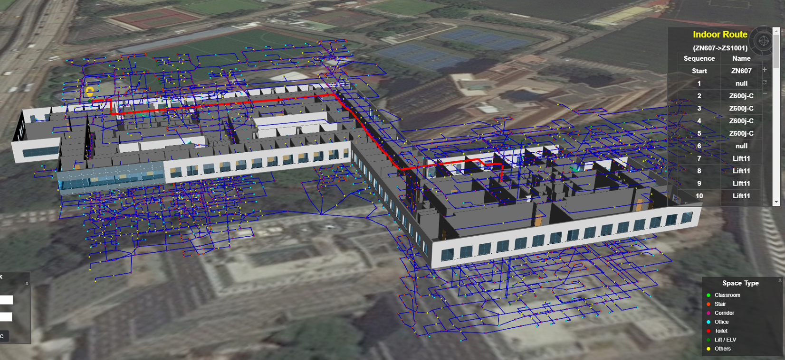

智慧城市與空間大數據分析實驗室
智慧城市空間數據基礎設施
城市結構包括公民、活動和城市空間對象等多種元素。香港作為最知名的國際大都市之一，在城市形態，建築環境和交通系統方面具有非常高的複雜性。香港特區政府的智慧城市藍圖涉及六個主要領域，即「智慧出行」、「智慧生活」、「智慧環境」、「智慧市民」、「智慧政府」及「智慧經濟」。
空間數據基礎設施是智慧城市發展的重要基礎。我們的實驗室已經啟動了覆蓋全香港的空間數據基礎設施平台。平台初步集成了室外、室內、地上、地下以及時空動態模型。
城市空間對象和空間大數據可視化平台
我們建立了基於開源項目Cesium的空間信息平台。平台的核心是跨平台、跨瀏覽器的WebGL語言，該語言基於JavaScript，允許通過硬件加速實現高性能圖形和可視化。我們的目標是為不同背景的潛在用戶群和團體提供一個技術中立的平台，以進行功能擴展，實現基於Web和大規模三維地理空間數據的可視化和應用程序。

物流公司車輛的空間分佈

城市三維模型及實時路況
三維地理數據庫
我們構建了香港的三維地理數據庫，用於數據存儲，共享和交換。3D GIS需要處理許多地形，圖像，3D城市模型和紋理數據，其數據量通常是2D GIS的幾倍，甚至數百倍。一個中型城市的三維數據往往從幾十GB到幾百GB不等，如何組織和管理這些海量數據是當前3D GIS的核心問題，也是數字地球、數字城市技術需要解決的關鍵問題。

不同細節層次（LoD）的3D建築模型：LoD1（白色），LoD2（含紋理）
室內外一體導航
我們正在開發室內外一體化的導航解決方案。這類導航方案對香港等建築密集的城市非常重要，而密集化也是未來世界很多城市的發展方向。

基於BIM模型的室內網絡和導航